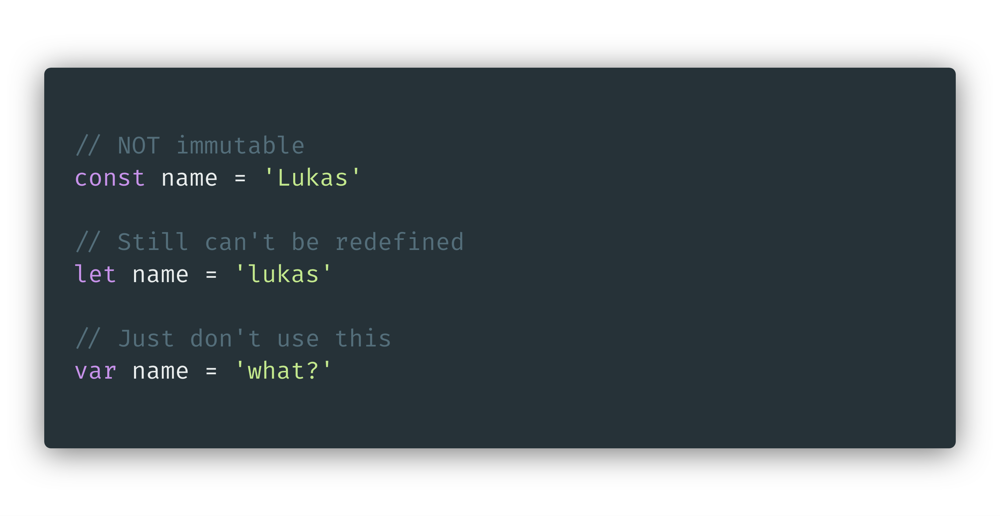
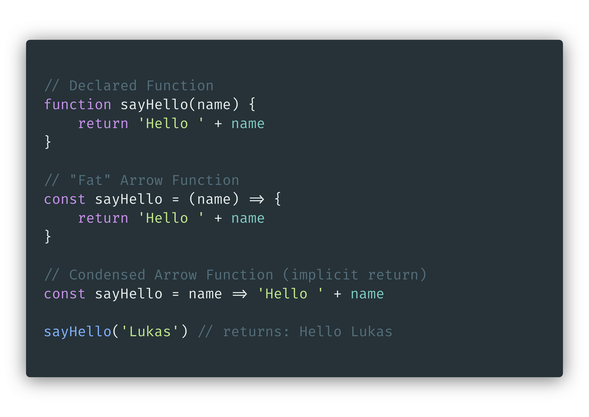

Don't be fooled by const, it's not immutable. Properties within a constant variable can be mutated, but the difference is the variable cannot be reassigned a new value.
Difference between declaring and assigning variables.
const lets you assign a variable and be sure that it will NOT be overwritten or reassigned.
let allows you to assign a variable and overwrite the value of the variable. It still cannot be declared as a new variable twice, just like const.
var is not "bad" necessarily, it just lets you do things you may not want to do and not tell you you're doing them. Like declaring a variable twice.
Arrow functions can be inserted anywhere a regular declared function can be inserted. They will give the same result, but do not behave the same.
this is the most important difference in arrow functions. In a declared function, this is bound to the function itself. In arrow functions, this is bound to the scope of the containing function. This is especially important in event listeners.